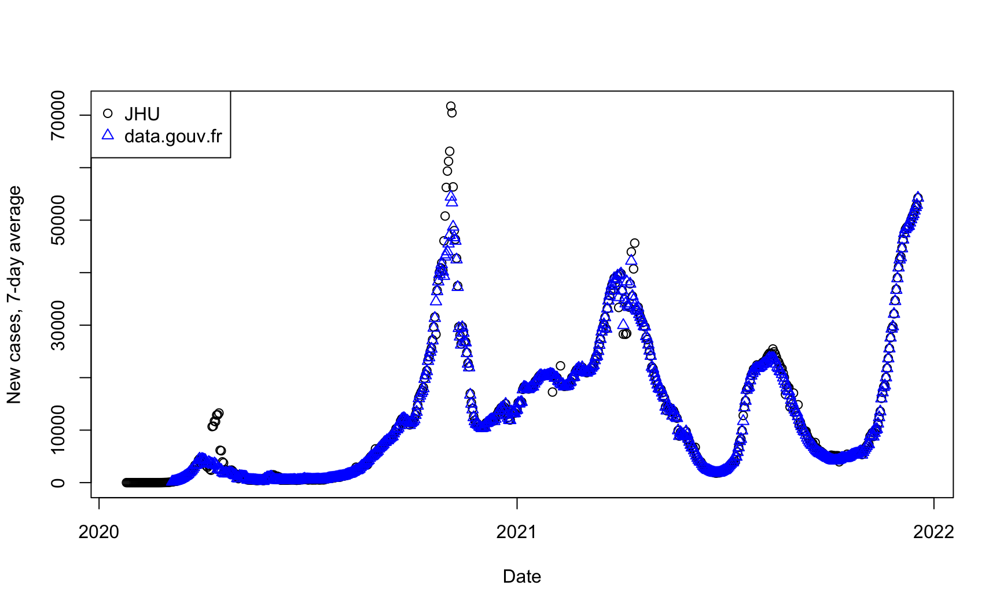
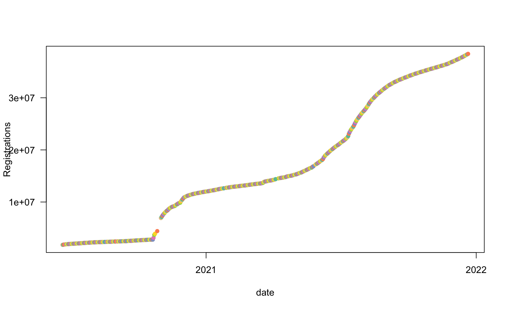
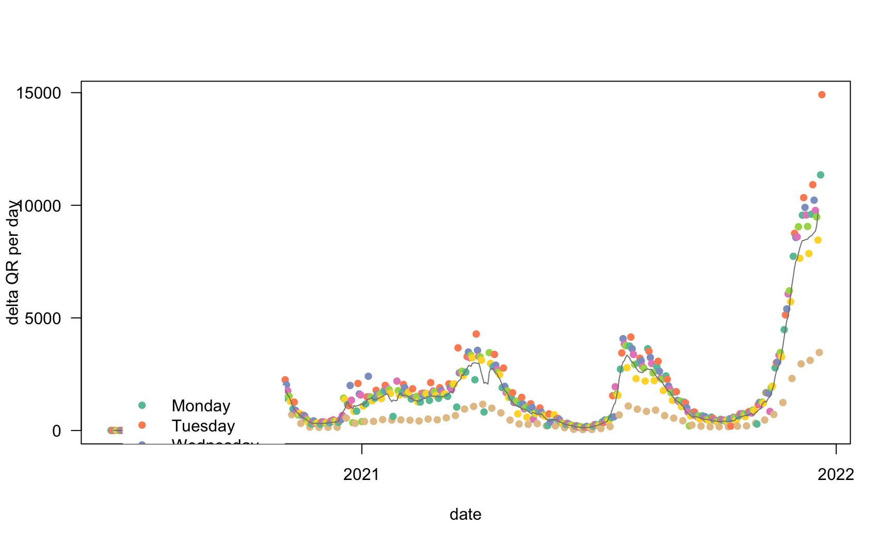
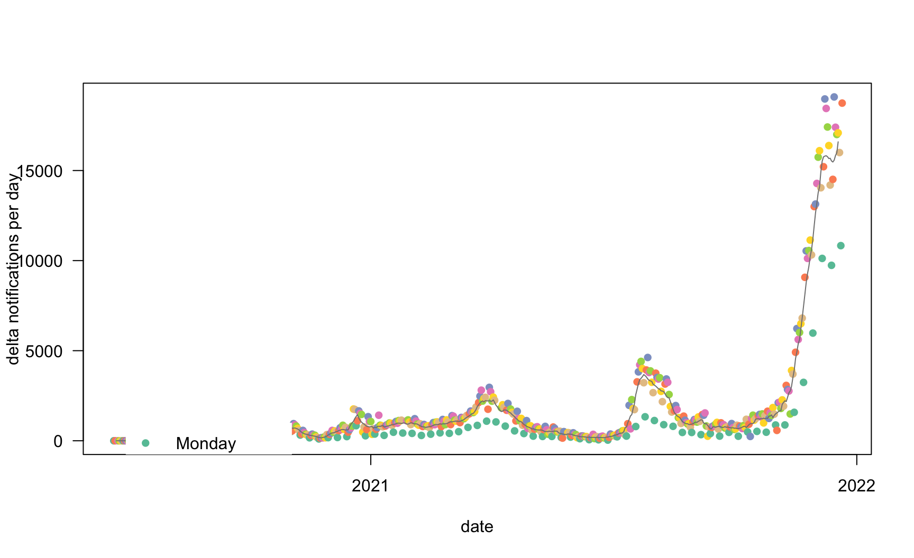
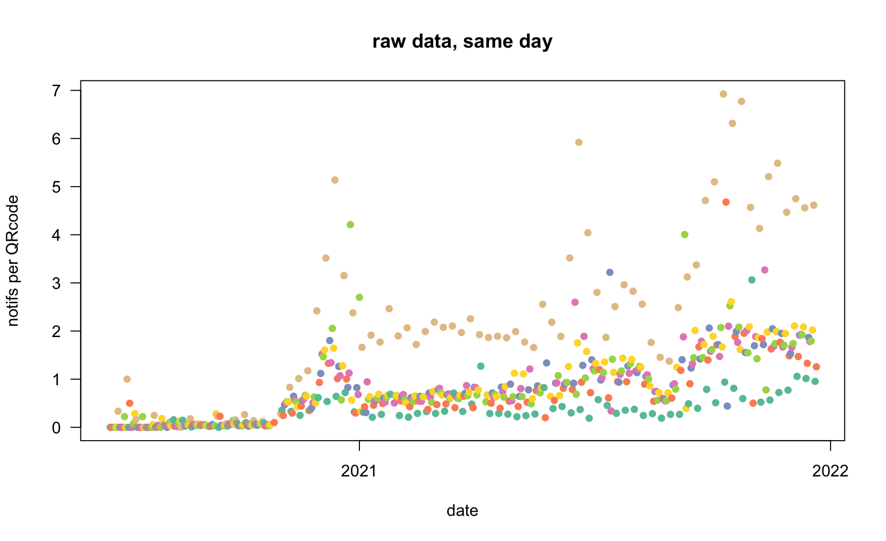
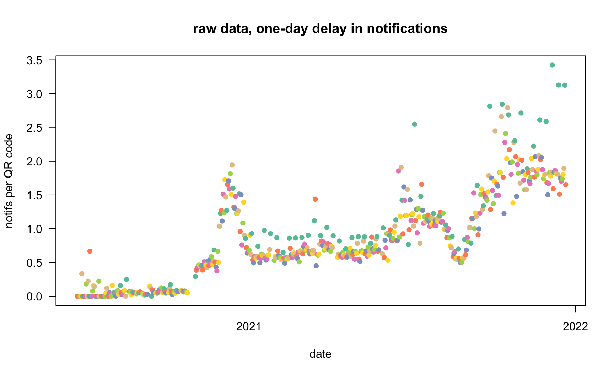
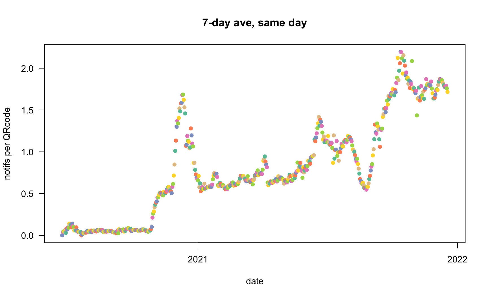
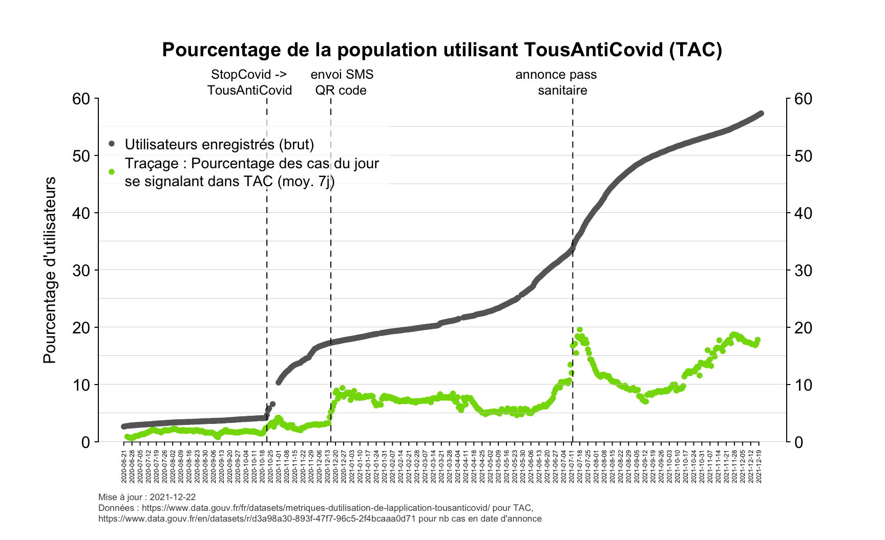
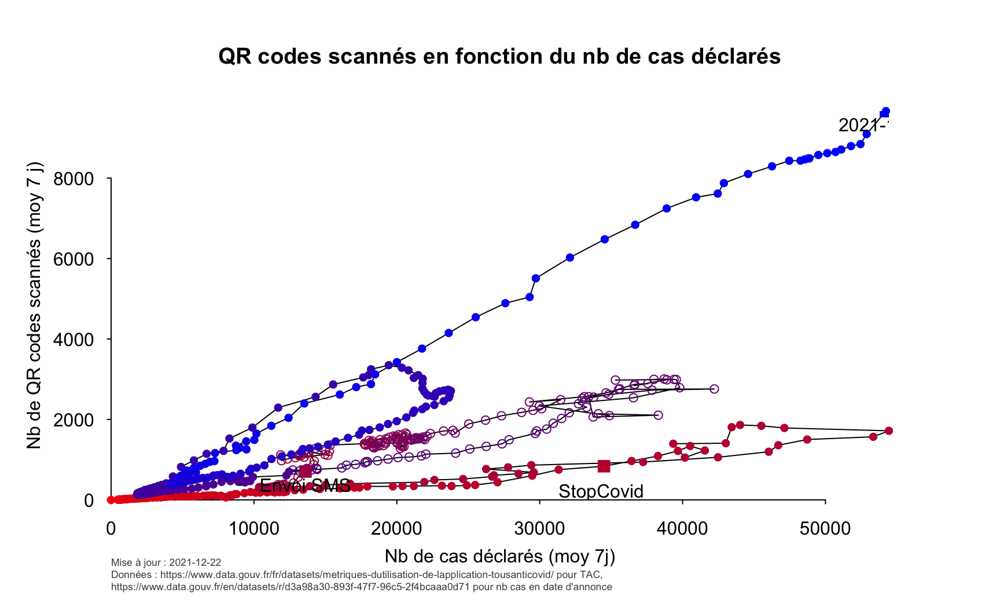
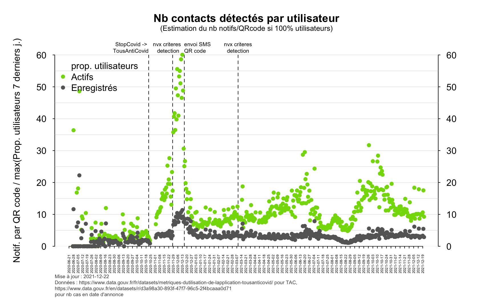

# Load and format data
# 1) TAC
# Data Source : https://www.data.gouv.fr/fr/datasets/metriques-dutilisation-de-lapplication-tousanticovid/
# URL of the data on data.gouv.fr
URL <- "https://www.data.gouv.fr/fr/datasets/r/0e2168ec-24c7-4b49-a900-c7dd12f8e88c"
# Download and read data
today <- Sys.Date() # today's date
dataFile <- paste0("data/TAC_", today, ".csv") # name file with today's date
if(dlData){
download.file(URL, dataFile) # download file from repo
}
dat <- read.csv(dataFile)
## Description from the website (2020-12-23)
## Le présent jeu de données informe pour chaque jour depuis le lancement de l'application le 2 juin 2020 :
##
## Total cumulé du nombre d'applications enregistrées moins le nombre de désenregistrements.
## Total cumulé d’utilisateurs notifiés par l’application : le nombre d’utilisateurs notifiés par l’application comme contacts à risque suite à une exposition à la COVID-19, depuis le 2 juin 2020.
## Total cumulé d’utilisateurs se déclarant comme des cas de COVID-19 par jour : le nombre d’utilisateurs qui se sont déclarés comme des cas de COVID-19 dans l’application, depuis le 2 juin 2020.
# Check data
# Time differences between dates
unique(diff(as.Date(dat$date))) # -> there are some gaps in the data
# New columns with delta between dates
dat$diffDate <- c(NA, diff(as.Date(dat$date))) # Difference in days between data points
# for the other columns, divide by the time difference to have differences per day
# (otherwise data not comparable when different time differences)
dat$diffRegisterPerDay <- c(NA, diff(dat$register) / dat$diffDate[-1])
dat$diffQRPerDay <- c(NA, diff(dat$qrCode) / dat$diffDate[-1])
dat$diffNotifPerDay <- c(NA, diff(dat$notified) / dat$diffDate[-1])
# Create new dataset without gaps in the dates
# New dates, without gaps
rangeDates <- range(as.Date(dat$date))
allDates <- seq(rangeDates[1], rangeDates[2], by="days")
dat.temp <- as.data.frame(as.character(allDates))
names(dat.temp) <- "date"
# Merge the datasets by date
tmp <- merge(dat, dat.temp, by = "date", all = TRUE)
# note: this adds NA at the dates where there were no data;
# these dates are put at the end of the table
# Sort the new dataset by date
sortedDateIndex <- sort(as.character(tmp$date), index.return = TRUE)$ix
dat.all <- tmp[sortedDateIndex, ]
# Add day of the week
dat.all$weekDay <- weekdays(as.Date(dat.all$date))
# Load function to compute sliding average
source("commonFuncs.R")
# Remove negative values
dat.all$diffNotifPerDay[dat.all$diffNotifPerDay < 0 ] <- NA
# Compute the average values, 1-week window, focal point in the middle
dat.all$diffRegisterPerDay.WeekAve <- sliding.ave(dat.all$diffRegisterPerDay)
dat.all$diffQRPerDay.WeekAve <- sliding.ave(dat.all$diffQRPerDay)
dat.all$diffNotifPerDay.WeekAve <- sliding.ave(dat.all$diffNotifPerDay)
dat.all$register.WeekAve <- sliding.ave(dat.all$register)
dat.all$date <- as.Date(dat.all$date)# 2) Data from JHU
# The date in these data is the date of the result's annoucement
URL <- "https://raw.githubusercontent.com/CSSEGISandData/COVID-19/master/csse_covid_19_data/csse_covid_19_time_series/time_series_covid19_confirmed_global.csv"
# Download and read data
dataFile <- paste0("data/JHU_cases_all_", today, ".csv") # name file with today's date
if(dlData){
download.file(URL, dataFile) # download file from repo
}
datJHU <- read.csv(dataFile, header = TRUE, check.names = FALSE)
# Extract data about France
datJHU.France <- datJHU[datJHU$`Country/Region` == "France", ]
# Collapse data for all France (including DOM TOM)
datJHU.France.agg <- apply(datJHU.France[, -(1:4)], 2, sum)
# Need to reformat the data: have one column for dates and one column for values
datJHUFr <- data.frame(matrix(0, ncol = 2, nrow = length(datJHU.France.agg)))
datJHUFr$date <- as.Date(names(datJHU.France.agg), format = "%m/%d/%y")
datJHUFr$cumP <- unname(datJHU.France.agg)
datJHUFr <- datJHUFr[, -(1:2)]
# Get week day
datJHUFr$weekDay <- weekdays(as.Date(datJHUFr$date))
# Extract data per day (JHU provides cumulative values)
datJHUFr$P <- c(datJHUFr[1, "cumP"], diff(datJHUFr$cumP))
# Turn negative values into NA
# (has to be done after diff are calculated to make sure corrections are taken into account)
datJHUFr[which(datJHUFr$P < 0), "P"] <- NA
# Add the sliding window value to the JHU data
# (after negative values have been turned into NAs)
datJHUFr$P.WeekAve <- sliding.ave(datJHUFr$P, winwdt = 7, pos = 4, na.rm = TRUE)# 3) French data from data.gouv.fr, which JHU uses as source
URL <- "https://www.data.gouv.fr/en/datasets/r/d3a98a30-893f-47f7-96c5-2f4bcaaa0d71"
# Download and read data
dataFile <- paste0("data/FR_cases_all_", today, ".csv") # name file with today's date
if(dlData){
download.file(URL, dataFile) # download file from repo
}
datFR <- read.csv(dataFile, header = TRUE, check.names = FALSE)
datFR$date <- as.Date(datFR$date)
# Get week day
datFR$weekDay <- weekdays(as.Date(datFR$date))
# Extract data per day (dataset provides cumulative values)
datFR$P <- c(datFR[1, "total_cas_confirmes"], diff(datFR$total_cas_confirmes))
# Turn negative values into NA
# (has to be done after diff are calculated to make sure corrections are taken into account)
datFR[which(datFR$P < 0), "P"] <- NA
# Add the sliding window value to the data
# (after negative values have been turned into NAs)
datFR$P.WeekAve <- sliding.ave(datFR$P, winwdt = 7, pos = 4, na.rm = TRUE)Compare JHU and data.gouv.fr datasets (will use data.gouv.fr)
# Test: compare JHU and datFR
plot(datJHUFr$date, datJHUFr$P.WeekAve, xlab = "Date", ylab = "New cases, 7-day average")
points(datFR$date, datFR$P.WeekAve, col = "blue", pch = 2)
legend("topleft", col = c(1, "blue"), pch = c(1, 2), legend = c("JHU", "data.gouv.fr"))
# Merge the datasets
dat.withEpi <- merge(dat.all, datFR, by = "date")
names(dat.withEpi)[9] <- "weekDay"Données TAC jusqu’au Tue 21 Dec 2021 (inclus)
Données épidémio (JHU) jusqu’au Tue 21 Dec 2021 (inclus). Données épidémio (data.gouv.fr) jusqu’au Tue 21 Dec 2021 (inclus).
On utilise les données épidémio data.gouv.fr.
StopCovid est devenu TousAntiCovid vers le 22 octobre 2020 https://www.gouvernement.fr/partage/11818-conference-de-presse-sur-l-application-des-mesures-contre-la-covid-19
Une campagne de publicité a été lancée à la fin novembre / début décembre 2020 (avec envoi de SMS à la population)
Les critères de détection de contact ont changé le 27-28 novembre 2020 (changement distance et durée). Source
A partir du 16 décembre 2020, le QR code est plus facile à obtenir (envoi SMS). Source.
Nouveau critère encore de détection de contacts vers le 9 mars 2021.
Source.
Problème de dédoublonnage : correction à partir du 20 mai 2021 Source > A compter de ce jour, les indicateurs seront corrigés afin de supprimer l’effet doublon, lors de la réalisation de plusieurs tests de dépistage par une même personne. > > Depuis le début de la pandémie, la plateforme sécurisée Si-DEP enregistre tous les résultats des tests de dépistage. Afin de garantir la protection des données personnelles des personnes testées, chaque résultat était lié à l’émission d’un pseudo anonymisé. Cependant, avec l’apparition des variants sur le territoire, certaines personnes sont amenées à réaliser deux tests, jusqu’à présent comptabilisés deux fois. > > L’algorithme utilisé a donc récemment été mis à jour afin qu’il ne décompte qu’un seul patient lorsque celui-ci se fait tester plusieurs fois dans un intervalle de temps court, toujours en respectant l’anonymat. Grâce à cette nouvelle pseudonymisation, Santé publique France est capable de renforcer son efficacité et de produire des données encore plus précises, consultables chaque semaine dans son point épidémiologique.
Les tests antigéniques ont été inclus à partir du 8 décembre 2020.
Ajout de l’information de la période des doublons dans les données
# Add information about the reliability of the count
# less reliable in the time interval where there were issues with duplicates
dat.withEpi$reliableEpi <- TRUE
idoublons <- which(as.Date(dat.withEpi$date) > as.Date(date_debutAg) & as.Date(dat.withEpi$date) <= as.Date(date_finDoublonAg))Annonce du pass sanitaire
date_annonceMacron <- "2021-07-12"# Load plot settings
source("commonPlot.R")wk <- seq(min(dat.withEpi$date), max(dat.withEpi$date), by = "week")
plotXaxs <- function(){
axis(1, wk, labels = as.Date(wk), las = 3, cex.axis = 0.4)
}plot(as.Date(dat.all$date), dat.all$register,
xlab = "date",
ylab = "Registrations",
pch = 16, col = cols[dat.all$weekDay])
(NB: when there is a gap in the data, the difference in number of users is divided by the length of the time gap)
plot(as.Date(dat.all$date), dat.all$diffRegisterPerDay, log = "",
xlab = "date",
ylab = "delta registrations per day",
pch = 16, col = cols[dat.all$weekDay],
ylim = c(1, 7*10^5),
yaxs = "i")
legend(as.Date("2020-07-01"), y = 500000, legend = names(cols), col = cols, pch = 16, box.lwd = 0)
abline(v = as.Date("2020-10-22"))The vertical line corresponds to the switch from StopCovid to TousAntiCovid. There was an advertisement campaign by the end of November/beginning of December, with SMS sent to the population.
plot(as.Date(dat.all$date), dat.all$diffQRPerDay, log = "",
xlab = "date",
ylab = "delta QR per day",
pch = 16, col = cols[dat.all$weekDay])
lines(dat.all$date, dat.all$diffQRPerDay.WeekAve, col = colAve)
legend(as.Date("2020-07-01"), y = 2000, legend = c(names(cols), "7-day average"), col = c(cols, colAve), pch = c(rep(16, 7), -1), box.lwd = 0, lwd = c(rep(0, 7), 1))
The minima are on Sundays
plot(as.Date(dat.all$date), dat.all$diffNotifPerDay, log = "",
xlab = "date",
ylab = "delta notifications per day",
pch = 16, col = cols[dat.all$weekDay])
lines(dat.all$date, dat.all$diffNotifPerDay.WeekAve, col = colAve)
legend(as.Date("2020-07-01"), y = 1000, legend = c(names(cols), "7-day average"), col = c(cols, colAve), pch = c(rep(16, 7), -1), box.lwd = 0, lwd = c(rep(0, 7), 1))
The minima are on Mondays
-> There seems to be a one-day difference between scanned QR codes and notifications sent. This was already noticed by F. Lesueur here.
plot(as.Date(dat.all$date), dat.all$diffNotifPerDay / dat.all$diffQRPerDay, log = "",
xlab = "date",
ylab = "notifs per QRcode",
pch = 16, col = cols[dat.all$weekDay], main = "raw data, same day")
plot(as.Date(dat.all$date), dat.all$diffNotifPerDay / (c(NA, dat.all$diffQRPerDay[-nrow(dat.all)])), log = "",
xlab = "date",
ylab = "notifs per QR code",
pch = 16, col = cols[dat.all$weekDay], main = "raw data, one-day delay in notifications")
plot(as.Date(dat.all$date), dat.all$diffNotifPerDay.WeekAve / dat.all$diffQRPerDay.WeekAve, log = "",
xlab = "date",
ylab = "notifs per QRcode",
pch = 16, col = cols[dat.all$weekDay], main = "7-day ave, same day")
par(mar = rep(5, 4), mgp = c(2, 0.3, 0), tck = -0.01)
colNotifsCas <- "#045a8d"
plot(as.Date(dat.all$date), dat.all$diffNotifPerDay.WeekAve / (c(NA, dat.all$diffQRPerDay.WeekAve[-nrow(dat.all)])), log = "",
xlab = "",
ylab = "nb de notifs par QR code",
pch = 16, col = colNotifsCas,
yaxs = "i", frame.plot = FALSE, axes = FALSE)
title("Nb notifications par QR code, moy. 7j", line = 2.5)
# Annotate with dates
abline(v = as.Date(date_TAC), lty = 2)
cexAnnotate <- 0.8
mtext("StopCovid ->
TousAntiCovid", side = 3, at = as.Date(date_TAC), adj = 1, cex = cexAnnotate)
abline(v = as.Date(date_sms), lty = 2)
mtext("envoi SMS
QR code", side = 3, at = as.Date(date_sms), adj = 0, cex = cexAnnotate)
abline(v = as.Date(date_criteres), lty = 2)
mtext("nvx criteres
detection", side = 3, at = as.Date(date_criteres), adj = 0.7, cex = cexAnnotate)
abline(v = as.Date(date_criteres2), lty = 2)
mtext("nvx criteres
detection", side = 3, at = as.Date(date_criteres2), adj = 0.5, cex = cexAnnotate)
# mtext("Date", side = 1, line = 1.5)
for(i in seq(0.5, 1.5, by = 0.5)){
abline(h = i, lty = 1, col = gray(0.8), lwd = 0.4)
}
mtext(paste0("Mise à jour : ", Sys.Date(), "
Données : https://www.data.gouv.fr/fr/datasets/metriques-dutilisation-de-lapplication-tousanticovid/ pour TAC"), cex = 0.55, col = gray(0.3), side = 1, line = 3.25, adj = 0, )
plotXaxs()
axis(2)
axis(4)Epidemic data, date is date at which result was communicated (and not sampling date).
plot(dat.withEpi$date, dat.withEpi$P, col = cols[dat.withEpi$weekDay], pch = 16,
xlab = "date", ylab = "nb of cases")
lines(dat.withEpi$date, dat.withEpi$P.WeekAve, col = colAve)
legend(as.Date("2020-07-01"), y = 65000, legend = c(names(cols), "7-day average"), col = c(cols, colAve), pch = c(rep(16, 7), -1), box.lwd = 0, lwd = c(rep(0, 7), 1))Not all users are active; some people have downloaded the app but do not turn on bluetooth; some may just have downloaded the app for their “attestations”.
To estimate the number of active users, we will compare the proportion of registered users in the whole population to the proportion of scanned QR codes among positive test results.
par(xpd = TRUE)
# Approximate size of the French population
par(mar = c(5, 5, 5, 5))
par(mgp = c(2, 0.4, 0), tck = -0.01)
popFR <- 67*10^6
# Registered users, as fraction of the total popuation
propUtil.Raw <- dat.withEpi$register / popFR
propUtil <- dat.withEpi$register.WeekAve / popFR
# Active users, averaged over a week
propUtilActif <- dat.withEpi$diffQRPerDay.WeekAve / dat.withEpi$P.WeekAve
colActif <- "#83D905"
colRegis <- gray(0.4)
colActifPb <- colActif#"#9FA738" # Simplification: ne pas montrer le donnees avec pbs doublons, car c'etait de toute maniere minime
# Flagging problems in epi data
cols <- rep(colActif, length(propUtilActif))
cols[idoublons] <- colActifPb
cexPoints <- 0.8 # Size of the dots
ymax <- 100*ceiling(10*max(propUtil.Raw, na.rm = TRUE))/10
plot(dat.withEpi$date, 100*propUtilActif,
xlab = "", ylab = "Pourcentage d'utilisateurs", ylim = c(0, ymax),
pch = 16, col = cols,
main = "Pourcentage de la population utilisant TousAntiCovid (TAC)",
yaxs = "i", frame.plot = FALSE, cex = cexPoints,
axes = FALSE)
#mtext("Date", side = 1, line = 1.5)
plotXaxs()
# Add horizontal lines to read the values
par(xpd = FALSE)
for(i in seq(0.05, ymax, by = 5)){
abline(h = i, lty = 1, col = gray(0.8), lwd = 0.4)
}
# Add points for raw users
points(dat.withEpi$date, 100*propUtil.Raw, pch = 16, col = colRegis, cex = cexPoints)
par(xpd = FALSE)
# Annotate with dates
cexAnnotate <- 0.8
dx <- 0.3
abline(v = as.Date(date_TAC), lty = 2)
mtext("StopCovid ->
TousAntiCovid", side = 3, at = as.Date(date_TAC), adj = 1-dx, cex = cexAnnotate)
abline(v = as.Date(date_sms), lty = 2)
mtext("envoi SMS
QR code", side = 3, at = as.Date(date_sms), adj = dx, cex = cexAnnotate)
abline(v = as.Date(date_annonceMacron), lty = 2)
mtext("annonce pass
sanitaire", side = 3, at = as.Date(date_annonceMacron), adj = 1-dx, cex = cexAnnotate)
mtext(paste0("Mise à jour : ", Sys.Date(), "
Données : https://www.data.gouv.fr/fr/datasets/metriques-dutilisation-de-lapplication-tousanticovid/ pour TAC,
https://www.data.gouv.fr/en/datasets/r/d3a98a30-893f-47f7-96c5-2f4bcaaa0d71 pour nb cas en date d'annonce"), cex = 0.55, col = gray(0.3), side = 1, line = 3.25, adj = 0)
legend("topleft", col = c(gray(0.4), colActif),#, colActifPb),
pch = 16,
legend = c("Utilisateurs enregistrés (brut)", "Traçage : Pourcentage des cas du jour
se signalant dans TAC (moy. 7j)"), #, "(qq pbs de doublons des données épidémiologiques)"),
pt.cex = cexPoints, box.lwd = 0, cex = 0.9, bg = gray(1, 0.7), inset = c(0, 0.05))
axis(4)
axis(2)
Plot QR codes as function of cases, for TAC twitter account
par(mar = c(5, 5, 5, 5))
par(mgp = c(3, 0.75, 0))
ii <- seq_len(nrow(dat.withEpi))/nrow(dat.withEpi)
# Flag epi data with issues
pchs <- rep(16, nrow(dat.withEpi)+1)
pchs[idoublons] <- 1
plot(c(0, dat.withEpi$P.WeekAve), c(0, dat.withEpi$diffQRPerDay.WeekAve),
type = "l",
xlab = "",
ylab = "Nb de QR codes scannés (moy 7 j)",
xaxs = "i", yaxs = "i", frame.plot = FALSE,
main = "QR codes scannés en fonction du nb de cas déclarés")
par(xpd = TRUE)
points(c(0, dat.withEpi$P.WeekAve), c(0, dat.withEpi$diffQRPerDay.WeekAve), col = rgb(1-ii, 0, ii), pch = pchs)
mtext("Nb de cas déclarés (moy 7j)", side = 1, line = 2)
par(xpd = FALSE)
cexdate <- 1.5
i1 <- which(dat.withEpi$date == date_TAC)
i2 <- which(dat.withEpi$date == date_sms)
iend <- nrow(dat.withEpi)-3
pts <- c(i1, i2, iend)
points(dat.withEpi$P.WeekAve[pts], dat.withEpi$diffQRPerDay.WeekAve[pts], col = rgb(1-ii[pts], 0, ii[pts]), pch = 15, cex = cexdate)
text(dat.withEpi[pts, "P.WeekAve"], dat.withEpi[pts, "diffQRPerDay.WeekAve"], labels = c("StopCovid
-> TAC", "Envoi SMS", toString(dat.withEpi$date[iend])), adj = c(0.5, 1.5))
mtext(paste0("Mise à jour : ", Sys.Date(), "
Données : https://www.data.gouv.fr/fr/datasets/metriques-dutilisation-de-lapplication-tousanticovid/ pour TAC,
https://www.data.gouv.fr/en/datasets/r/d3a98a30-893f-47f7-96c5-2f4bcaaa0d71 pour nb cas en date d'annonce"), cex = 0.55, col = gray(0.3), side = 1, line = 3.25, adj = 0)
We want to see if the conditions to detect a contact have changed over time. If the app remains the same, the proportion of notified cases per QRcode should be a constant multiple of the proportion of app users. Notifications are sent to contacts of the 14? last days (maybe with decreasing proportion when the contact is older).
par(mar = rep(5, 4))
# Notifications per QR code, 1-day delay, raw
notifsPerQR.raw.decalage <- dat.all$diffNotifPerDay / (c(NA, dat.all$diffQRPerDay[-nrow(dat.all)]))
# Choice of the function over which cases are counted
prop.util <- function(x){
sliding.fun(x, FUN = max, winwdt = 7, pos = 7)
}
plot(as.Date(dat.all$date), notifsPerQR.raw.decalage / prop.util(propUtilActif),
xlab = "",
ylab = "Notif. par QR code / max(Prop. utilisateurs 7 derniers j.)",
main = "", type = "n",
yaxs = "i",
frame.plot = FALSE, axes = FALSE)
plotXaxs()
axis(2)
axis(4)
title("Nb contacts détectés par utilisateur", line = 3)
mtext("(Estimation du nb notifs/QRcode si 100% utilisateurs)", line = 2, side = 3, cex = 0.8)
# Grid lines
# for(i in 0:65){
# abline(h = i, col = gray(0.8))
# }
# for(i in seq(0, 65, by = 5)){
# abline(h = i, col = gray(0.8), lwd = 2)
# }
for(i in seq(0, 65, by = 5)){
abline(h = i, lty = 1, col = gray(0.8), lwd = 0.4)
}
# Annotate with dates
abline(v = as.Date(date_TAC), lty = 2)
cexAnnotate <- 0.6
mtext("StopCovid ->
TousAntiCovid", side = 3, at = as.Date(date_TAC), adj = 1, cex = cexAnnotate)
abline(v = as.Date(date_sms), lty = 2)
mtext("envoi SMS
QR code", side = 3, at = as.Date(date_sms), adj = 0, cex = cexAnnotate)
abline(v = as.Date(date_criteres), lty = 2)
mtext("nvx criteres
detection", side = 3, at = as.Date(date_criteres), adj = 0.7, cex = cexAnnotate)
abline(v = as.Date(date_criteres2), lty = 2)
mtext("nvx criteres
detection", side = 3, at = as.Date(date_criteres2), adj = 0.5, cex = cexAnnotate)
par(xpd = TRUE)
# Colors are flagging the duplicate problems
points(as.Date(dat.all$date), notifsPerQR.raw.decalage/prop.util(propUtilActif), pch = 16, col = cols)
points(as.Date(dat.all$date), notifsPerQR.raw.decalage/prop.util(propUtil.Raw), col = colRegis, pch = 16)
par(xpd = FALSE)
legend("topleft", col = c("white", colActif, #colActifPb,
colRegis, "white"), pch = 16,
legend = c("prop. utilisateurs ", "Actifs", #"Actifs, données avec pb doublons",
"Enregistrés"),
box.lwd = 0, bg = gray(0, 0))
mtext("", side = 1, line = 1.5)
mtext(paste0("Mise à jour : ", Sys.Date(), "
Données : https://www.data.gouv.fr/fr/datasets/metriques-dutilisation-de-lapplication-tousanticovid/ pour TAC,
https://www.data.gouv.fr/en/datasets/r/d3a98a30-893f-47f7-96c5-2f4bcaaa0d71
pour nb cas en date d'annonce"), cex = 0.55, col = gray(0.3), side = 1, line = 3.75, adj = 0)